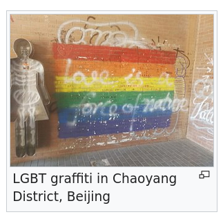

1: 19 October 2023
"This China-related article is a stub. You can help Wikipedia by expanding it."
Today I finished updating my resume for my grant application to travel to Beijing. I’ve been back there to visit my extended family about 4 times in my life. The last time I was there was the summer of 2018. That was before COVID severely complicated my gender and the process of flying to China all at once.
I’m going back soon, in January of 2024. In the meantime, my grandfather, my mom’s dad, passed away. I want to see my other grandparents before it’s too late. I love them, but I’m not as connected with them as I should be. I know they love me. But it’s so hard to feel it when they’re overseas and I barely speak their language.
I’ve had a few years to think about what means to be queer and Chinese without being in China. I’ve always been queer in China but I’d never known it. I’d always felt out of place in China, but never for this reason. Being out and being in China have never overlapped. I’m also an adult now. I have new knowledge and agency now and I realized that maybe I could use that to make something of this trip.
I don’t really like thinking of China as a homophobic wasteland. I know China is socially conservative compared to California but America likes to play up the bigotry of other countries and give itself too much credit. I have to remind myself of two things.
- The United States is not always a queer utopia either, and
- Socially conservative government policies don’t mean that actual queer people, on the ground, don’t have spaces where they live their lives
I’m going to girlmode for a month while I’m there. Even if societal views towards queer people aren’t as bad there as they’re made out to be, I still don’t plan to come out to my extended family. I’m not thrilled about it, but I want to see my family again and I’m determined to make the experience a little easier for myself.
Full of hope, I did a preliminary Google Search for “queer culture in china”. The first link was Wikipedia. It was a stub article. It had three sources, dating back to 2015 and 2017. One of them didn’t work. The others led to paywalled articles, one from Condè Nast titled “An LGBT-Friendly Guide to Beijing”. I do not trust Condè Nast.
Some other articles about gay bars. The drinking age in China is apparently 18, but I don’t enjoy bar environments and I’d rather stay mostly sober if I’m going to be out alone in a country where I’m totally illiterate and barely conversational to begin with. I’m not going to ask any of my family members to go to a gay bar with me. Still, I might visit one and check out the vibes, because they seem to be my best shot.
One of the related Wikipedia articles is about the Beijing LGBT Center. That excited me. I went to the page only to read that the center, which was a safe space, resource center, and advocacy group for queer people, had shuttered in May 2023. Five months ago. It had been going for 15 years. It had been going when I did my Winter Term project last January. ShanghaiPRIDE, the organization responsible for many queer events in the area, had also closed down since 2020. Both were probably due to government pressure. I was feeling a bit demoralized.
Still, I kept going. I read the Wikipedia articles about the Beijing Queer Chorus, although it didn’t have any information about the group’s activity since 2018. I read about the Beijing Queer Film Festival. Many of these Wikipedia articles have grammatical errors, awkward phrasing. Last fall (a year, a week, and two days ago exactly) I overhauled the article about the film Red Sorghum to be grammatically correct after watching it for my first-year seminar on gender and sexuality in China. I didn’t bother fixing these ones now, because they make me happy. They’re evidence that people living in China, who were involved with or supportive of those queer organizations, wrote these semi-obscure articles. Some gay nerd who was a fan of choral music or cinema put in the effort to create those articles in their non-native language, because they thought the subject matter was important.
The first Wikipedia page, the one called “LGBT culture in Beijing”, also had this image:
So yeah, I’m angry that the Beijing LGBT Center, ShanghaiPRIDE, and many other groups have been forced to shut down, at least for now. But I’ll have to wait until I actually have my feet on the ground to see for myself. I’m pretty visibly queer these days. Even if I try my absolute hardest to girlmode (which I won’t), I think I’d still ping gaydar. Previously it could have been written off as the awkward mannerisms of a child or preteen with no social skills or sense of fashion, but I think that cover has expired. So I’ll keep my eyes open and hope I find something, or hope something finds me.
Wikipedia: LGBT culture in Beijing